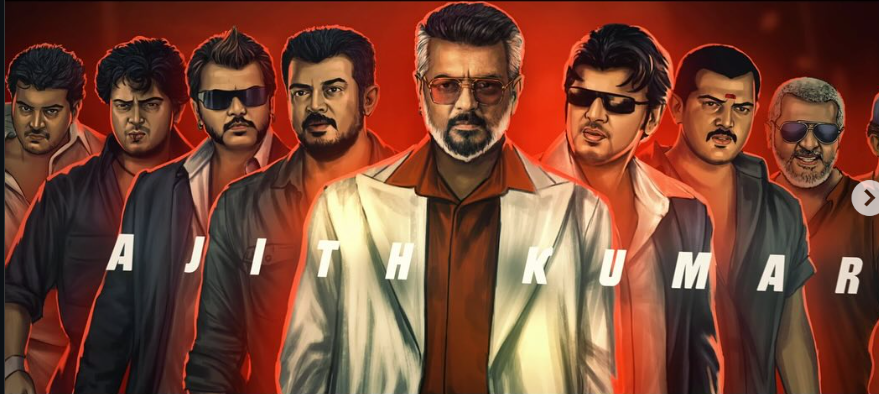
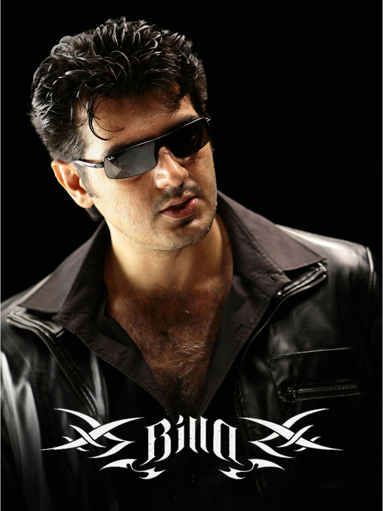
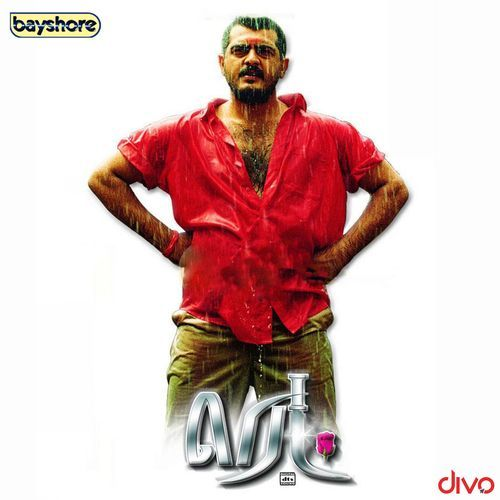
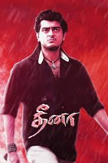
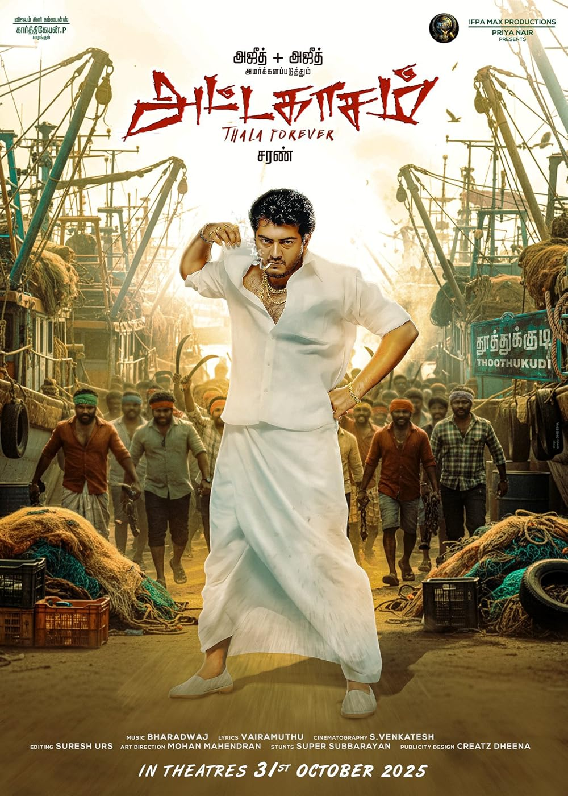

He is a Tamil actor,He is the actor who doesnt like fame.

Lets see my fav movies from him.
 |
 |
 |
 |
Billa, Red, and Dheena are three significant action films in the career of South Indian superstar Ajith Kumar. These films, particularly Dheena and Billa, played a crucial role in his transition from a romantic lead to an action icon known as "Thala".a popular Tamil action-masala film starring Ajith Kumar in dual roles as twin brothers, Jeeva (a street-smart rowdy) and Guru (a disciplined college student), separated in childhood, focusing on their contrasting lives, family conflicts, and eventual reunion, known for its entertainment value, catchy songs, and Ajith's charisma, making it a significant commercial hit and cult classic
| -MOVIE- | -YEAR- |
| Billa | 2007 |
| RED | 2002 |
| Dheena | 2001 |
| Attagasam | 2004 |